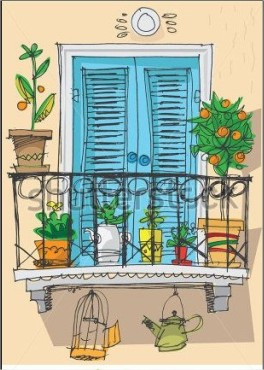
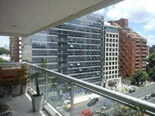

<!DOCTYPE html>
<html lang="es"></html>

<head>
	<meta charset="utf-8">
	<meta name="viewport" content="width=device-width , initial-scale=1">
	<title>MiBalcon:Clientes</title>
	<link rel="stylesheet" type="text/css" href="css/estilos.css" media="all">
	<!-- Cargo las fuentes de Google en línea -->
	<link href="https://fonts.googleapis.com/css2?family=Nanum+Brush+Script&family=Oxygen+Mono&family=Schoolbell&display=swap" rel="stylesheet">
	<!-- Ïconos -->
    <script src="https://kit.fontawesome.com/4c636e252b.js" crossorigin="anonymous"></script>
</head>


<body>
	<header>
		<!-- Logo -->
		<a href="index.html"></a>

		<!-- Menú de navegación -->
		<ul class="nav-list">
			<li class="nav-list-li">
				<a href="ideas.html">Ideas</a>
			</li>
			<li class="nav-list-li">
				<a href="clientes.html">Clientes</a>
			</li>
			<li class="nav-list-li">
				<a href="contacto.html">Contacto</a>
			</li>
		</ul>
	</header>

	<main>
		<h1>Mi Balcón - Nuestros clientes</h1>
	
		<div class="clientes">
			
			<section class="clientes-sec">

				<article class="tarjeta">
					<a href="#">
						<figure class="thumbnail">
							
						</figure>
						<div class="tarjeta-content">
							<h2>Balcón Romántico</h2>
							<p>Creamos este espacio colocando sillas y mesa. Complementamos con almohadones y plantas.
								Asesoramos para crear un ambiente integrado con el interior.
							</p>
						</div>
					</a>
				</article>

				<article class="tarjeta">
					<a href="#">
						<figure class="thumbnail">
							
						</figure>
						<div class="tarjeta-content">
							<h2>Balcón vista al río </h2>
							<p>Con unos sillones de ratán en color oscuro logramos crear este ambiente despojado que invita a admirar la vista.</p>
						</div>
					</a>
				</article>

				<article class="tarjeta">
					<a href="#">
						<figure class="thumbnail">
							
						</figure>
						<div class="tarjeta-content">
							<h2>Balcón citadino </h2>
							<p>Aprovechamos la amplitud del espacio para dar continuidad al living y generar calidez y relax. </p>
						</div>
					</a>
				</article>

				<article class="tarjeta">
					<a href="#">
						<figure class="thumbnail">
							
						</figure>
						<div class="tarjeta-content">
							<h2>Balcón flores y faroles</h2>
							<p>Aprovechamos la orientación este del balcón para alegrarlo con flores de estación en la misma gama. El detalle de los faroles integrados a las plantas es un detalle sensible.</p>
						</div>
					</a>
				</article>

				<article class="tarjeta">
					<a href="#">
						<figure class="thumbnail">
							
						</figure>
						<div class="tarjeta-content">
							<h2>Balcón Mascotas</h2>
							<p>Si tenemos mascotas, es muy importante tener en cuenta su seguridad, que la logramos con esta delicada red, que pasa casi desapercibida.</p>
						</div>
					</a>
				</article>

				<article class="tarjeta">
					<a href="#">
						<figure class="thumbnail">
							
						</figure>
						<div class="tarjeta-content">
							<h2>Balcón mirando al sur </h2>
							<p>Si la orientación es hacia el sur se puede crear un espacio de descanso con plantas en distintos tonos de verde. Se complementa con jardín vertical.</p>
						</div>
					</a>
				</article>

			</section>

		</div>
	</main>

	<footer>
        <div class="foot">
            <div class="foot-links">
                <a href="#"><i class="fab fa-facebook-square fa-2x"></i></a>
                <a href="#"><i class="fab fa-instagram fa-2x"></i></a>
                <a href="#"><i class="fab fa-twitter-square fa-2x"></i></a>
            </div>

            <div class="foot-copy">
                Copyright 2021 &copy; TP Codo a Codo.
            </div>    
            
        </div>
    </footer>

</body>

</html>